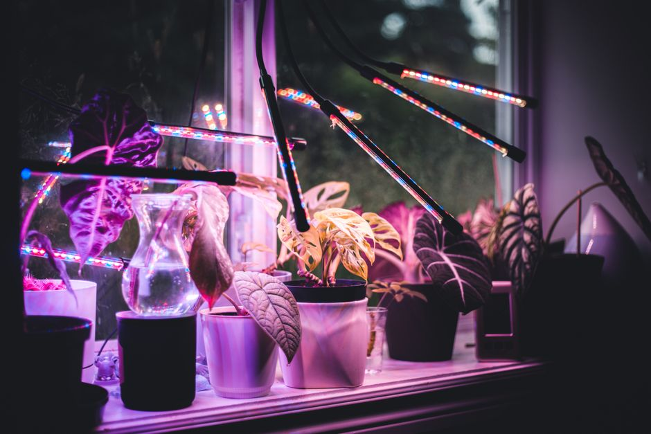

Errores comunes al iluminar tus plantas de interior
Cuando comenzamos a cuidar plantas de interior, la iluminación puede ser una fuente de preocupación. Es importante entender cuáles son las necesidades de cada especie para evitar errores que puedan dañarlas. Aquí te presento cinco errores comunes que debes evitar para mantener tus plantas de interior saludables.

Photo: Erik Mclean / Pexels
1. Exposición directa al sol
Photo: RDNE Stock project / Pexels
Ejemplo práctico
Por ejemplo, un pothos (Epipremnum aureum) que se coloca en una ventana que recibe todo el sol directo puede sufrir quemaduras en las hojas, que se manifiestan como manchas pardas y la caída de hojas. Este plantón prefiere lugares con luz indirecta, donde solo reciba reflejos de la luz del sol.
2. Uso de luces de bajo potencial
Algunas plantas, como la sansevieria (Dracaena trifasciata), toleran bien las condiciones de baja iluminación, pero eso no significa que necesiten poca luz. Una luz LED de bajo potencial puede no proporcionar la energía suficiente para que la planta crezca y se mantenga saludable. Utiliza luces LED de al menos 1000 lux para plantas que necesitan luz indirecta, y 3000 lux para aquellas que necesitan luz más brillante.
3. Exceso de luz directa en plantas que la toleran
Ejemplo práctico
Un ejemplar de ficus elastica (Ficus elastica) que se coloca en un lugar con luz directa puede sufrir quemaduras en las hojas, incluso si está acostumbrado a esta condición. El lugar ideal para esta especie sería una ventana que reciba luz indirecta durante el día y luz más tenue durante la noche.
4. Inconsistencia en la exposición a la luz
Es común que las personas cambien de lugar las plantas de interior de un día para otro, sin considerar que cada planta tiene sus preferencias. La monstera (Monstera deliciosa) necesita una iluminación constante y suave, ya que cambios bruscos pueden hacer que las hojas se pegan o caigan.
5. Exposición a luces cálidas o frías
Ejemplo práctico
La crassula (Crassula ovata) requiere luz directa durante gran parte del día, pero es importante evitar que las luces incandescentes le causen daño. Las luces LED proporcionan luz cálida y son ideales para estas especies, mientras que las luces de bajo consumo ofrecen una luz más fría y pueden dañar a las plantas si no se usan con cuidado.
Conclusión
Evitar estos errores puede ayudarte a mantener tus plantas de interior en perfectas condiciones. Recuerda que cada especie tiene sus preferencias, y lo mejor es conocerlas para brindarles el cuidado que necesitan. Con un poco de atención y cuidado, podrás disfrutar de un jardín interior saludable y hermoso.